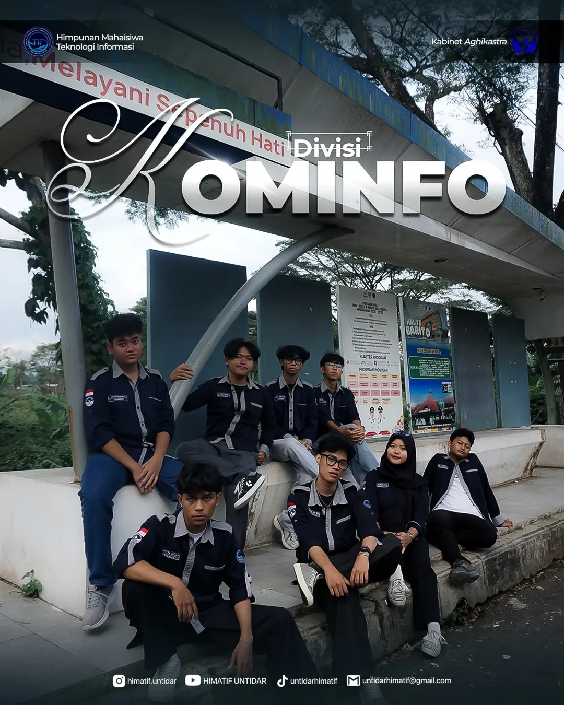
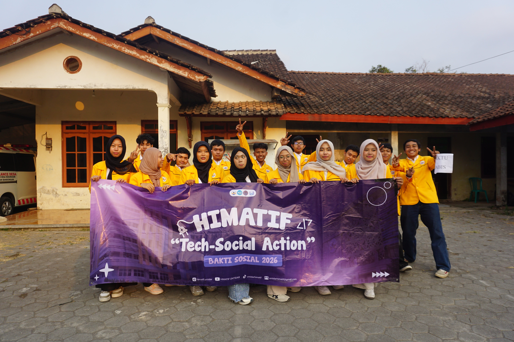

Biru Cerah
Menggambarkan energi dan dinamisme anggota HIMATIF yang proaktif dan tanggap terhadap perubahan teknologi.

Wadah pengembangan mahasiswa Teknologi Informasi yang aktif, komunikatif, dan berlandaskan rasa kekeluargaan.
Kenali HIMATIF ↓HIMATIF atau Himpunan Mahasiswa Teknologi Informasi Universitas Tidar merupakan organisasi mahasiswa yang menjadi ruang bertumbuh, berkolaborasi, dan mengembangkan potensi mahasiswa Program Studi S1 Teknologi Informasi.
Melalui berbagai program kerja dan kegiatan, HIMATIF membangun lingkungan organisasi yang interaktif, harmonis, disiplin, komunikatif, serta membuka ruang bagi minat, bakat, prestasi, dan relasi mahasiswa.
Menggambarkan energi dan dinamisme anggota HIMATIF yang proaktif dan tanggap terhadap perubahan teknologi.
Mencerminkan karakter modern dan futuristik serta kesiapan menghadapi perkembangan teknologi.
Merepresentasikan keanggunan dan profesionalisme serta standar tinggi dalam berkarya.
Menggambarkan kemurnian, kejujuran, integritas, dan komitmen terhadap kebenaran.
Kesatuan, keutuhan, dan kesempurnaan dalam mencapai tujuan.
Kreativitas, fleksibilitas, keterbukaan terhadap ide, dan inovasi.
Wadah bagi mahasiswa Program Studi S1 Teknologi Informasi.
Melambangkan bulan Februari dan tahun 2024 sebagai waktu terbentuknya HIMATIF.
Lambang HIMATIF secara keseluruhan melambangkan komitmen untuk menjadi bagian dari pendidikan tinggi yang unggul dalam bidang teknologi dan informasi, serta cita-cita untuk mencerahkan dan memajukan masyarakat melalui pendidikan yang berkualitas dan berlandaskan nilai moral dan etika.
“Mewujudkan HIMATIF sebagai organisasi yang aktif dan komunikatif sehingga dapat menjadi wadah pengembangan mahasiswa yang berlandaskan rasa kekeluargaan.”
Menciptakan himpunan yang interaktif dan harmonis.
Membangun kultur kerja yang disiplin, komunikatif, dan konsisten.
Menguatkan dan menambah jaringan relasi yang bermanfaat bagi program kerja dan kualitas anggota.
Optimalisasi sumber daya melalui minat dan bakat dengan semangat prestasi.
Menjadi perantara bagi mahasiswa dengan akademisi.
Struktur organisasi HIMATIF ditampilkan melalui profil masing-masing bidang.
 KETUA
KETUA WAKIL KETUA
WAKIL KETUA SEKRETARIS
SEKRETARIS BENDAHARA
BENDAHARA
KOMINFO PSDM
PSDM SOSHUM
SOSHUM AKADEMIK
AKADEMIK ADVOKASTRAT
ADVOKASTRAT MIKAT
MIKAT KEWIRAUSAHAAN
KEWIRAUSAHAANRangkaian kegiatan untuk mengembangkan kapasitas mahasiswa, memperluas pengalaman, dan membangun kebermanfaatan.
Kegiatan sosial sebagai bentuk kepedulian dan kontribusi kepada masyarakat.
Forum berbagi wawasan untuk memperluas pengetahuan mahasiswa.
Pengembangan kemampuan manajerial dan kepemimpinan mahasiswa.
Mendorong mahasiswa mengenal dan berpartisipasi dalam kompetisi teknologi.
Belajar dan bertukar pengalaman dengan organisasi mahasiswa lain.
Kegiatan praktik untuk meningkatkan keterampilan dan kompetensi teknologi.
Dokumentasi kegiatan akan ditampilkan dalam format foto beserta nama kegiatan agar setiap momen memiliki konteks.

FOTO 01Dokumentasi kegiatan
 FOTO 02
FOTO 02Dokumentasi kegiatan
 FOTO 03
FOTO 03Dokumentasi kegiatan
 FOTO 04
FOTO 04Dokumentasi kegiatan
 FOTO 05
FOTO 05Dokumentasi kegiatan
 FOTO 06
FOTO 06Dokumentasi kegiatan
Saksikan video profil HIMATIF Universitas Tidar.
Tonton di YouTube ↗Ikuti informasi dan kegiatan terbaru melalui kanal resmi HIMATIF.